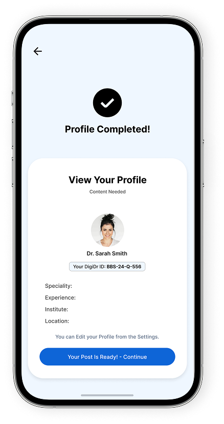
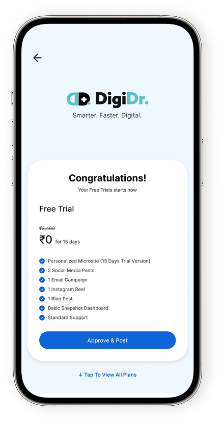
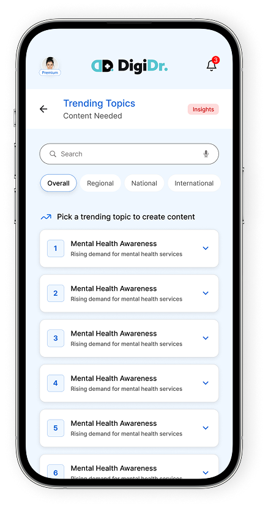
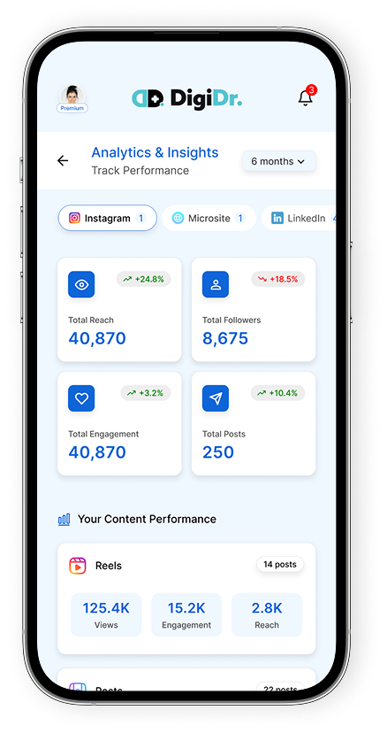
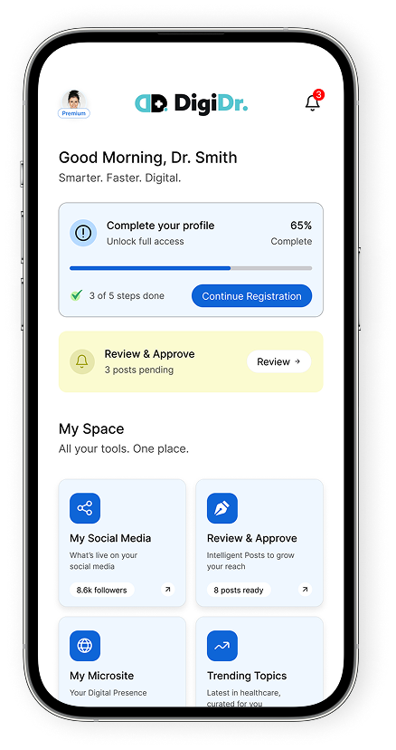

How It Works?
DigiDr is the digital infrastructure that turns a doctor into an online entity, searchable, credible, and always visible.

Your Online Identity, Structured in Minutes
Share your speciality, clinic details, consultation timings, and professional information. DigiDr’s AI instantly structures this into your verified digital identity - a complete, searchable online entity representing you as a doctor. No forms to design. No websites to build. No technical setup required.

Go Live as a Digital Entity
Your verified doctor profile, microsite, clinic information, and speciality-specific knowledge layer go live, published from your own professional handles, under your own name. DigiDr runs the infrastructure in the background. You remain the author, the authority, and the owner of your digital identity.

AI That Keeps You Visible and Relevant
DigiDr’s AI continuously monitors your digital presence, adjusting what goes out, when it goes out, and how it’s framed to match your speciality, your locality, and what patients are actively searching for. You stay discoverable not because of campaigns, but because your digital infrastructure is always working.

Know Your Digital Footprint
See exactly how patients are finding you, search visibility, profile reach, microsite traffic, and content performance. DigiDr’s dashboard gives you a clear, weekly picture of your digital presence: where you’re strong, where you’re invisible, and what’s driving patient trust. No manual tracking. No spreadsheets. Just clarity.

Scale Your Digital Infrastructure as You Grow
Whether you’re a solo practitioner establishing your first digital identity, a growing clinic expanding patient reach, or a multi-location healthcare organisation, DigiDr scales with you. Your digital infrastructure, profile, microsite, AI content layer, analytics, and referral tracking grow as your practice does. Start free. Scale when ready.